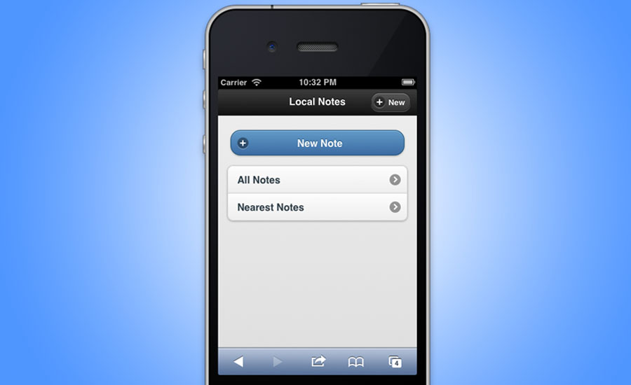
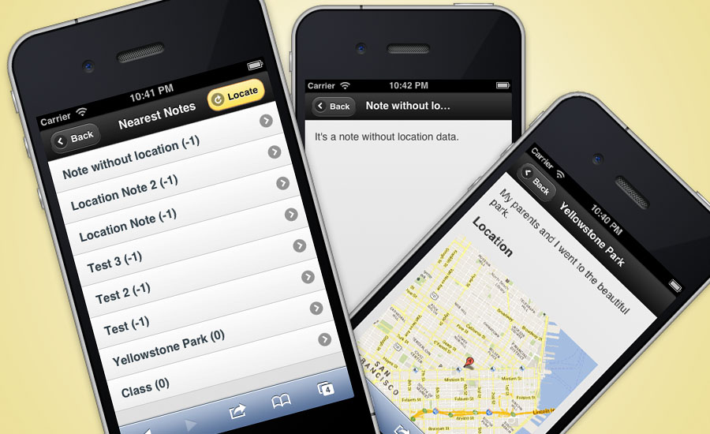

Where Have I Been?
I'm currently working on a small project of a note taking iPhone application. I'm learning BackboneJS framework now. So I used this project as an exercise.
It allows user to take notes with their current location information, similar to a check-in mobile application like Path. The difference is that it stores data locally which gives users more privacy. So it's very suitable for users to write diaries or travel journals to record their personal life. When a user saves his notes, besides the note title and content, the application can also store the latitude and longitude values of the current location. It then generates a static Google map showing the location in the note.
This application can list all the notes which the user has taken in two different orders - alphabetical order and location distance order.
HTML5LocalStorageGeolocationBackboneJSjQueryMobileNote TakingFront-end Development
- 
Home Page

Create a New Note with or without Location Information
- 
Sort Notes by Distance, and Show Notes with Location or without Location